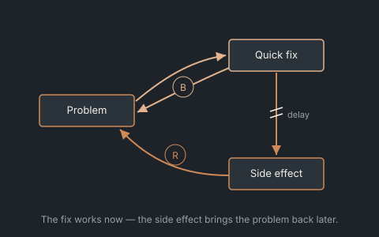
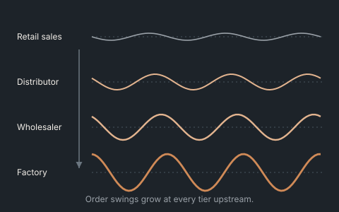
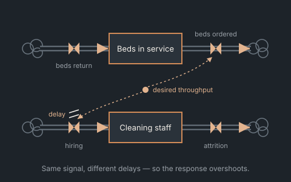

Systems Diagnostics & Executive Workshops · Causal mapping / simulation
Find the structure behind the problem that keeps coming back.
Teams often diagnose structural problems as behavioural ones. Facilitated causal mapping, backed by simulation, shows your leadership team which fixes are durable — and which only move the symptom.

The leadership team asks“We have fixed this three times. Why does it keep coming back?”
- Problem
- Teams routinely diagnose structural problems as behavioral ones — blaming a supplier, a planner, or “poor communication” for dysfunction that a system dynamics reading would trace to the structure itself. The bullwhip effect is the textbook case.
- Approach
- Facilitated causal loop mapping with your team, backed by simulation exercises — including live, game-based demonstrations — that let people feel the dynamic before they're asked to accept the diagnosis.
- Output
- A shared causal model your leadership team actually agrees on, and a clear read on which fixes are structural (durable) versus behavioral (temporary).
- Fits when
- You've tried the obvious fixes — more communication, tighter forecasts, new SOPs — and the same problem keeps resurfacing in a different form.
Where this has been applied

Consumer beverageIllustrative
The order swings weren't a forecasting failure. They were built into the order policy.
Separating real demand from the artifacts of order-batching and lead-time perception.
Read the case →
HealthcarePublished article
A 10% rise in demand produced a 22% overshoot in bed stock.
Two coupled stocks with different delays don't scale linearly — they overshoot.
Read the case → Lab · live model
Lab · live model
Global Disruption Atlas
A live network to run scenarios against in a workshop.
Open the model →Next step